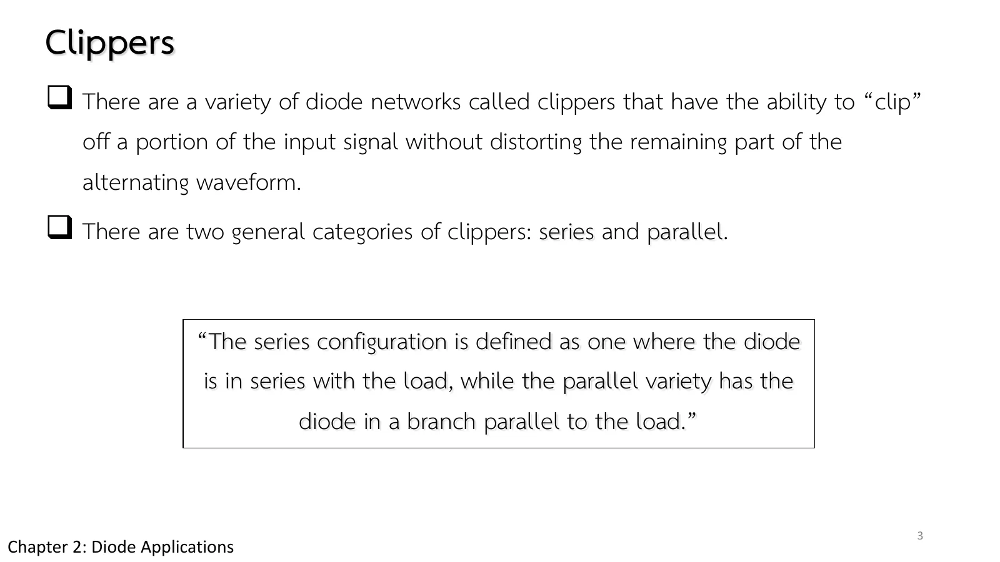
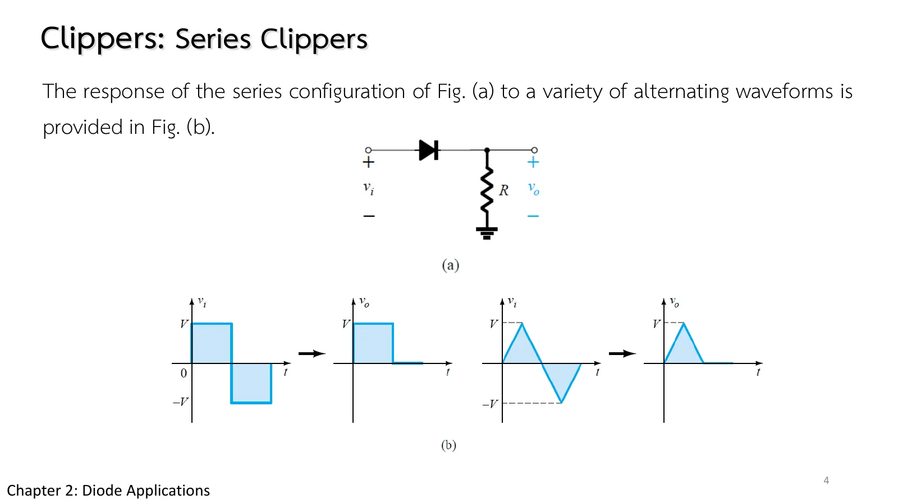
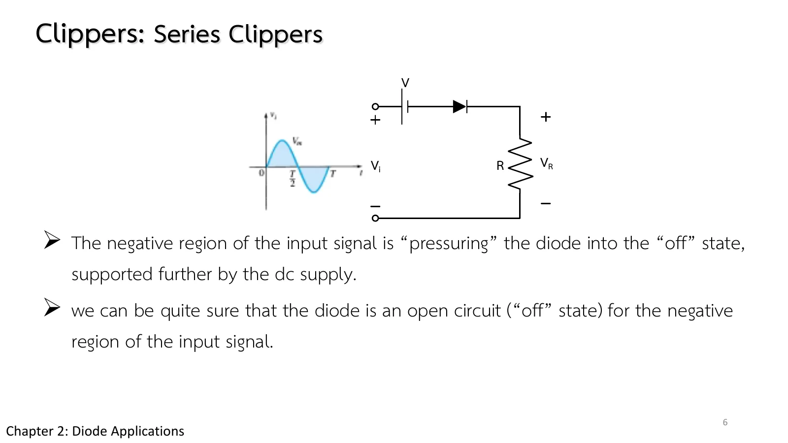
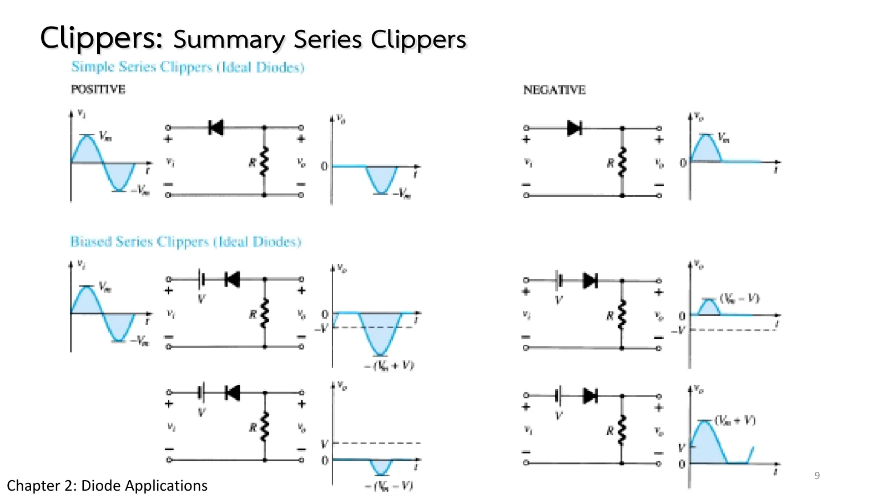
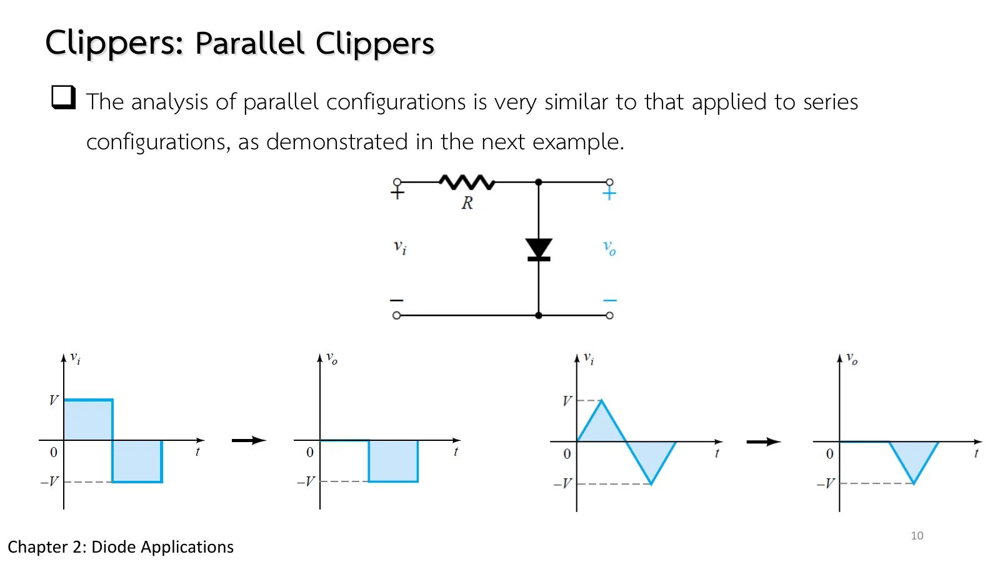
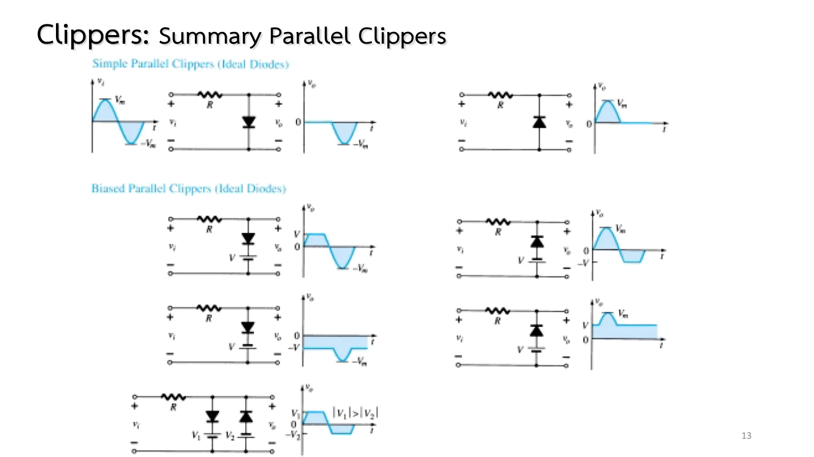
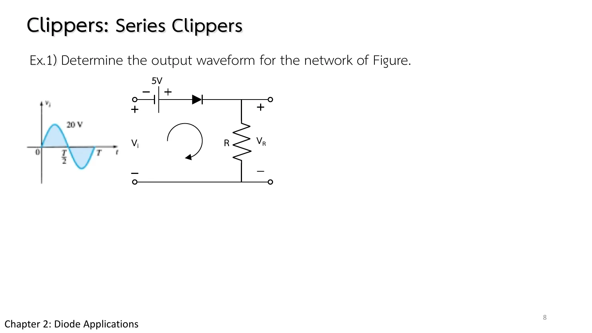
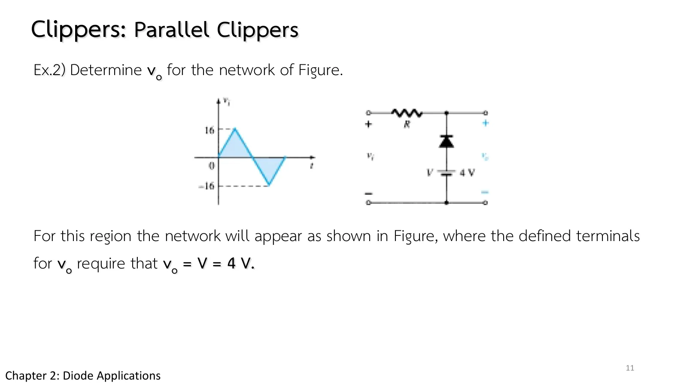
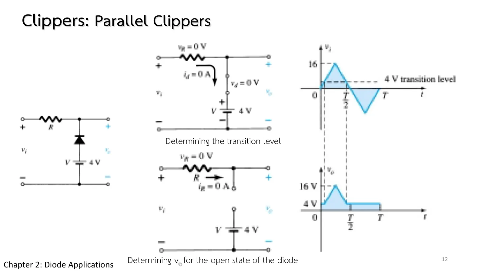

วงจรตัดสัญญาณ Clippers
Clippers Series and parallel, with and without a battery
ที่จริงเราสร้างวงจรตัดสัญญาณมาแล้วโดยไม่รู้ตัว: วงจรเรียงกระแสครึ่งคลื่นของหน้า 2.5 ตัดครึ่งลบของคลื่นทิ้งทั้งหมด ต่อแบตเตอรีเพิ่มอีกก้อน แล้วจุดตัดจะย้ายไปอยู่ที่ระดับใดก็ได้ตามต้องการ โดยส่วนที่เหลือของคลื่นไม่ผิดรูป หน้านี้เปิดสไลด์ชุดที่ 2 ของบท (Diode Applications, Part II) ด้วยวงจรตัดสองแบบ คือแบบอนุกรม (series clipper) ที่ไดโอดอนุกรมกับโหลด และแบบขนาน (parallel clipper) ที่ไดโอดอยู่ในกิ่งที่ขนานกับโหลด มีภาพจำลองที่เลือกแบบวงจร ทิศไดโอด แบตเตอรี และรูปคลื่นขาเข้าได้ พร้อมกราฟถ่ายโอน \(v_o\) เทียบกับ \(v_i\) (ส่วน A) โจทย์ Ex.1 และ Ex.2 และแบบฝึกเพิ่ม (สไลด์บทที่ 2 ชุดที่ 2 หน้า 3–13 · Boylestad หัวข้อ 2.8)
We have already built a clipper without calling it one: the half-wave rectifier of page 2.5 clips off the whole negative half of the wave. Add a battery and the clipping point moves to any level you like, while the rest of the wave keeps its shape. This page opens the second set of chapter 2 slides (Diode Applications, Part II) with two kinds of clipper: the series clipper, with the diode in series with the load, and the parallel clipper, with the diode in a branch parallel to the load. You can choose the circuit, the diode direction, the battery and the input waveform, with the transfer characteristic \(v_o\) against \(v_i\) (section A), then work Ex.1 and Ex.2 and more practice (chapter 2 slides, Part II, pp. 3–13 · Boylestad section 2.8).
ประเด็นสำคัญของหน้านี้
- อนุกรมกับขนาน: วงจรตัดแบบอนุกรมมีไดโอดอนุกรมกับโหลด แบบขนานมีไดโอดในกิ่งที่ขนานกับโหลด (สไลด์ชุดที่ 2 หน้า 3)
- ในแต่ละขณะ ขาเข้าเหมือนแหล่งจ่ายกระแสตรงค่าหนึ่ง จึงใช้วิธีของหน้า 2.2 ทีละขณะได้ (สไลด์ชุดที่ 2 หน้า 7)
- ระดับเปลี่ยนสถานะ (transition level): ขณะที่ไดโอดเปลี่ยนสถานะ ไดโอดเป็นลัดวงจรที่ยังไม่มีกระแส แทน \(v_d = 0\) และ \(i_d = 0\) แล้วหา \(v_i\) ณ จุดนั้น ขาเข้าฝั่งหนึ่งของระดับนี้ไดโอดนำ อีกฝั่งไม่นำ (สไลด์ชุดที่ 2 หน้า 7, 12)
- ขั้นตอน: ดูว่า \(v_o\) อยู่คร่อมอะไร หาว่าไดโอดน่าจะนำในช่วงไหน หาระดับเปลี่ยนสถานะ แล้วหา \(v_o\) ในแต่ละช่วงและเขียนรูปคลื่น สรุปวงจรแบบต่าง ๆ อยู่ในสไลด์ชุดที่ 2 หน้า 9 และ 13
Key points of this page
- Series and parallel: a series clipper has the diode in series with the load, a parallel clipper has it in a branch parallel to the load (Part II slide p. 3).
- At any instant the input acts like a dc source of that value, so the method of page 2.2 applies instant by instant (Part II slide p. 7).
- The transition level: at the change of state the diode is a short carrying no current yet; put \(v_d = 0\) and \(i_d = 0\) and find \(v_i\) there. On one side of this level the diode is on, on the other off (Part II slides pp. 7, 12).
- The steps: see what \(v_o\) is across, decide when the diode is likely on, find the transition level, then find \(v_o\) in each region and sketch it. The circuits are summed up on Part II slides pp. 9 and 13.
ไดโอดอยู่ตรงไหน: อนุกรมหรือขนาน
Where the diode sits: in series or in parallel
วงจรตัดสัญญาณตัดส่วนหนึ่งของคลื่นทิ้ง โดยส่วนที่เหลือไม่ผิดรูป (สไลด์ชุดที่ 2 หน้า 3) แบ่งเป็นสองตระกูลตามตำแหน่งของไดโอด: แบบอนุกรม ไดโอดอนุกรมกับโหลด แบบขนาน ไดโอดอยู่ในกิ่งที่ขนานกับโหลด
สไลด์หน้า 4 ป้อนคลื่นสี่เหลี่ยมและคลื่นสามเหลี่ยมให้วงจรตัดแบบอนุกรมที่ง่ายที่สุด ผลออกมาแบบเดียวกันทุกรูปคลื่น: ครึ่งบวกผ่านไปครบ ครึ่งลบหายไปทั้งหมด
A clipper cuts off part of a wave and leaves the rest undistorted (Part II slide p. 3). There are two families, by where the diode sits: in a series clipper it is in series with the load, in a parallel clipper it is in a branch parallel to the load.
Slide p. 4 feeds square and triangle waves to the simplest series clipper. Every waveform comes out the same way: the positive half passes untouched and the negative half disappears.


ระดับเปลี่ยนสถานะ
The transition level
สไลด์หน้า 5 ต่อแบตเตอรี V อนุกรมกับไดโอด โดยหันขั้วขวางการนำ ตอนนี้ขาเข้าเป็นบวกอย่างเดียวยังไม่พอ ต้องเกิน V โวลต์ไดโอดจึงนำ ส่วนในครึ่งลบ ทั้งขาเข้าและแบตเตอรีช่วยกันดันให้ไดโอดไม่นำ จึงมั่นใจได้ว่าเป็นเปิดวงจร (สไลด์หน้า 6)
เคล็ดลับของสไลด์หน้า 7 คือมองทีละขณะ: ขาเข้าในขณะหนึ่งเหมือนแหล่งจ่ายกระแสตรงค่าหนึ่ง ไดโอดเปลี่ยนสถานะที่ \(v_i = V\) พอดี เหนือระดับนั้นไดโอดเป็นลัดวงจร \(v_o = v_i - V\) ยอดขาออกจึงเหลือ \(V_m - V\)
Slide p. 5 puts a battery V in series with the diode, poled against conduction. Now a positive input is not enough: it must exceed V volts before the diode turns on. In the negative half, the input and the battery both push the diode off, so it is surely an open circuit (slide p. 6).
The trick of slide p. 7 is to look one instant at a time: at any instant the input acts like a dc source of that value. The diode changes state at exactly \(v_i = V\); above that level it is a short, \(v_o = v_i - V\), and the output peaks at \(V_m - V\).


![Part II slide 7, Clippers, Series Clippers: keep in mind that at an instantaneous value of v_i the input can be treated as a dc supply of that value and the corresponding dc value (the instantaneous value) of the output determined. For V_m greater than V the diode is in the short-circuit state, v_o = V_m − V; at v_i = V the diode changes state; at v_i = −V_m, v_o = 0 V. The figure: v_i with a dashed level V, the circuit with the diode replaced by a short, and v_o peaking at V_m − V, with v_i = V marked as where the diode changes state.](slides/ch2b/p07.webp)
↓ ส่วน A: ระดับเปลี่ยนสถานะคือหักมุมของกราฟถ่ายโอน ตั้งแบตเตอรีเป็นค่าลบเพื่อสร้างวงจรของสไลด์หน้า 5–7
↓ Section A: the transition level is the corner of the transfer characteristic; set a negative battery to build the circuit of slides pp. 5–7
ทดลองวงจรตัด: แบบวงจร ทิศไดโอด แบตเตอรี และขาเข้า
Try a clipper: circuit, diode direction, battery and input
สไลด์หน้า 9 รวมวงจรตัดแบบอนุกรมทุกแบบไว้ในหน้าเดียว สไลด์หน้า 10 ย้ายไดโอดไปไว้ในกิ่งที่ขนานกับขาออก ซึ่งวิเคราะห์ด้วยวิธีเดียวกันเกือบทั้งหมด และสไลด์หน้า 13 สรุปแบบขนาน ลองสร้างวงจรเหล่านี้ในภาพจำลองทีละวงจร ยกเว้นวงจรตัดสองด้านท้ายสไลด์หน้า 13 ซึ่งต้องใช้ไดโอดสองตัว
Slide p. 9 gathers every series clipper on one page; slide p. 10 moves the diode into a branch parallel to the output, analysed in almost the same way; and slide p. 13 sums up the parallel ones. Build them one at a time in the simulation, except the two-sided clipper at the bottom of slide p. 13, which needs two diodes.



ภาพบนคือวงจร ถัดมาคือกราฟถ่ายโอน (transfer characteristic) \(v_o\) เทียบกับ \(v_i\) ที่ได้จากตัวแก้วงจร จุดสีเหลืองคือขณะนี้ หักมุมของเส้นคือระดับเปลี่ยนสถานะ และล่างสุดคือรูปคลื่น ลองสร้างวงจรในสไลด์หน้า 9 และ 13 (ยกเว้นคลิปเปอร์สองข้างท้ายหน้า 13 ซึ่งใช้ไดโอดสองตัวกับแบตเตอรีสองก้อน) ด้วยการเลือกแบบวงจร ทิศไดโอด และแบตเตอรี (ค่าลบคือกลับขั้วแบตเตอรี)
On top is the circuit, then the transfer characteristic, \(v_o\) against \(v_i\), found by the solver: the yellow dot is the present instant and the corner of the line is the transition level; the waveforms are at the bottom. Build the circuits of slides pp. 9 and 13 (all but the two-sided clipper at the end of p. 13, which needs two diodes and two batteries) by choosing the circuit, the diode direction and the battery (a negative value turns the battery round).
Ex.1: วงจรตัดแบบอนุกรมกับแบตเตอรี 5 V
Ex.1: a series clipper with a 5 V battery
Ex.1 (สไลด์ชุดที่ 2 หน้า 8) กลับขั้วแบตเตอรี 5 V ให้ช่วยไดโอดแทนที่จะขวาง ก่อนเปิดเฉลย ลองหาระดับเปลี่ยนสถานะ: ไดโอดเริ่มนำเมื่อ \(v_i\) เท่าใด แล้วยอดขาออกจะสูงกว่าหรือต่ำกว่า 20 V
Ex.1 (Part II slide p. 8) turns the 5 V battery round so that it helps the diode instead of opposing it. Before opening the solution, find the transition level: at what \(v_i\) does the diode turn on, and will the output peak above or below 20 V?

ขาเข้า \(v_i = 20\sin\omega t\) V ต่อกับแบตเตอรี 5 V (ขั้วบวกหันเข้าหาไดโอด) ไดโอดอุดมคติที่หันตามทิศตามเข็มนาฬิกา และ R จงเขียนรูปคลื่นขาออกที่คร่อม R
The input \(v_i = 20\sin\omega t\) V drives a 5 V battery (its + side towards the diode), an ideal diode pointing clockwise, and R. Sketch the output across R.
กราฟใต้วงจรคือ \(v_i\) และ \(v_o\) ที่ตัวแก้วงจรคำนวณ เส้นประสีแดงคือระดับเปลี่ยนสถานะ ลองตอบก่อน
Under the circuit are \(v_i\) and the \(v_o\) the solver finds; the dashed red line is the transition level. Try it first.
Ex.2: วงจรตัดแบบขนานกับแบตเตอรี 4 V
Ex.2: a parallel clipper with a 4 V battery
Ex.2 (สไลด์ชุดที่ 2 หน้า 11) เป็นวงจรตัดแบบขนาน ขาเข้าเป็นคลื่นสามเหลี่ยม ±16 V และขาออกวัดคร่อมกิ่งของไดโอดกับแบตเตอรี 4 V หาระดับเปลี่ยนสถานะด้วยวิธีของสไลด์หน้า 7 ก่อน แล้วเทียบกับเฉลยในสไลด์หน้า 12 ท้ายข้อ
Ex.2 (Part II slide p. 11) is a parallel clipper: a ±16 V triangle wave, with the output taken across the branch of the diode and a 4 V battery. Find the transition level first with the method of slide p. 7, then compare with the solution on slide p. 12 at the end of the problem.

ขาเข้าเป็นคลื่นสามเหลี่ยมยอด ±16 V ผ่าน R ไปยังจุดขาออก ซึ่งมีไดโอดอุดมคติ (แอโนดต่อขั้วบวกของแบตเตอรี 4 V แคโทดต่อจุดขาออก) ต่อลงกราวด์ ขาออกวัดคร่อมกิ่งไดโอดกับแบตเตอรี จงหา \(v_o\)
A triangle wave of ±16 V drives, through R, the output node, from which an ideal diode (anode on the + terminal of a 4 V battery, cathode on the output) goes to ground. The output is taken across the diode-and-battery branch. Determine \(v_o\).
ขาเข้าในภาพจำลองเป็นคลื่นสามเหลี่ยม ขั้นที่ 2 ไดโอดเริ่มวิ่ง ลองตอบก่อน
The simulated input is a triangle wave; the dots start at step 2. Try it first.

ฝึกเพิ่ม
More practice
ลองทำดู 1 — กราฟถ่ายโอน
- ส่วน A ตั้งแบบอนุกรม แบตเตอรี 0 V: กราฟถ่ายโอนเป็นเส้นตรง \(v_o = v_i\) ทางขวาของ 0 และเป็นศูนย์ทางซ้าย ขาออกเหลือครึ่งบวก (วงจรครึ่งคลื่นของหน้า 2.5)
- ตั้งแบตเตอรี +5 V: หักมุมย้ายไปที่ \(v_i = -5\) V และเส้นตรงยกขึ้น 5 V ตรงกับ Ex.1
- เปลี่ยนเป็นแบบขนาน แบตเตอรี +4 V กับคลื่นสามเหลี่ยม: ได้ Ex.2 ขาออกถูกตรึงไว้ไม่ให้ต่ำกว่า 4 V
ลองทำดู 2 — คลื่นสี่เหลี่ยมและไดโอดซิลิคอน
- เลือกคลื่นสี่เหลี่ยม: ขาเข้ามีเพียงสองระดับ วิเคราะห์เหมือนวงจรกระแสตรงสองวงจร (ตำรา Example 2.19)
- เปลี่ยนไดโอดเป็นซิลิคอน: หักมุมของกราฟถ่ายโอนเลื่อนไป 0.7 V (ตำรา Example 2.21)
Try this 1 — the transfer characteristic
- In section A choose series with a 0 V battery: the transfer characteristic is the line \(v_o = v_i\) right of 0 and zero to its left, so the output keeps the positive half (the half-wave rectifier of page 2.5).
- Set the battery to +5 V: the corner moves to \(v_i = -5\) V and the line rises by 5 V, as in Ex.1.
- Switch to parallel with +4 V and a triangle input: this is Ex.2, the output held from going below 4 V.
Try this 2 — square waves and silicon diodes
- Choose a square wave: the input has only two levels, analysed like two dc circuits (the book's Example 2.19).
- Switch to a silicon diode: the corner of the transfer characteristic moves by 0.7 V (the book's Example 2.21).